Most of this book has been about RF signals you mean to create or receive. Radios, Wi-Fi links, Bluetooth devices, and cell phones all exist to emit or capture energy on purpose. This chapter is about the other kind of RF: the energy a product radiates or conducts as a side effect of doing its job, and the energy from the outside world that can make a product misbehave. That two-way problem is the subject of electromagnetic compatibility, and the testing that proves a product is well behaved is one of the last gates a design has to clear before it can ship.
The stakes are practical. A device that fails compliance cannot be sold legally in most markets, and a device that is easily upset by interference will fail in the field even if it passed on the bench. This chapter introduces the fundamentals of electromagnetic interference (EMI) and electromagnetic compatibility (EMC), walks through the precompliance measurements you can run with modest equipment, and closes with a conceptual tour of the standards families that govern this work today.
Every digital circuit is a small radio it never meant to be. A processor with a clock in the gigahertz range, a memory bus switching hundreds of millions of times a second, a switching power supply chopping current at high speed: all of them produce sharp edges, and sharp edges are rich in harmonics that reach far above the fundamental clock. Any element with fast rise times, square pulse edges, or transient currents can radiate, and that radiation can interfere both with your own intentional transmissions and with nearby devices.
This is not a problem unique to processors. A relay snapping closed, a motor commutating, a DC-DC converter, a high-speed serial link: each is a candidate source. The faster electronics get, the more of the spectrum they fill with unintended energy. EMI testing exists to measure that energy, set limits on it, and confirm a product stays inside those limits.
Unintentional transmission. Faster clocks generally mean faster performance, so designers keep pushing them up. Many modern processors run clocks in the multi-gigahertz range, and chip-to-chip buses on a board commonly operate in the hundreds of megahertz. Energy at those frequencies, and at their harmonics, can couple into antennas, cables, and neighboring circuits. A product that leaks too much of it becomes a noise source for everything around it.
Electromagnetic compatibility (EMC). Almost any electronic design intended for commercial sale is subject to EMC testing. EMC has two halves: emissions, which is how much energy a product puts out, and immunity (also called susceptibility), which is how well a product tolerates energy coming in. A compatible product is quiet enough not to bother its neighbors and tough enough not to be bothered by them. Any company that wants to sell a product into a given country must show it meets the rules set by that country's regulatory body. In the United States, the FCC sets those rules, drawing heavily on test methods developed by the International Special Committee on Radio Interference (CISPR) and the International Electrotechnical Commission (IEC). In Europe, the CE marking framework references harmonized standards built on the same CISPR and IEC foundations. [1] Verify before publication.
Sample testing. To be sold legally, a representative sample of the product must pass a defined series of tests. In many product categories, a company may self-test and self-certify, but only if it prepares and retains detailed documentation of the test conditions and the data. Many companies instead hire an accredited compliance laboratory to run the tests. Testing that follows every detail of the applicable specification is called compliance testing, and its results can be used to certify the device.
Full compliance versus precompliance. Full compliance testing follows the specification exactly, and its results can certify a device. It can also be expensive and may require specialized chambers and instruments that many companies do not own. One way to control that cost is to test throughout the design process, well before sending the product to a full compliance lab. This precompliance testing can be tailored to mirror the compliance conditions closely. Done well, it raises the odds of passing on the first official attempt, lowers total test cost, and shortens time to market. The precompliance methods in the sections that follow use simple tools to find and fix problems early. They are not a substitute for accredited testing, but they are a strong head start.
An unintentional radiator is a product that emits RF as a byproduct of normal operation. A useful mental image is a radio that, instead of broadcasting one clean station, sprays low-level noise across many frequencies at once. Those radiated emissions can degrade the performance of other products that happen to receive them.
The classic way to measure radiated emissions is to set up a spectrum analyzer with an antenna a few meters from the product and sweep the frequency range of interest. Figure 11.1 shows the block diagram of this far field radiated emissions test.
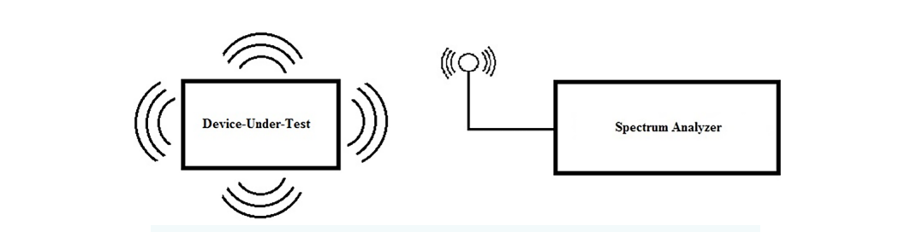
The idea is simple, but three concerns complicate it in practice.
First, most measurement antennas are broadband. They accept a wide range of frequencies and do not distinguish your device's emissions from everything else in the air. That makes any antenna-based measurement vulnerable to ambient signals: broadcast radio, Wi-Fi, cellular, and the rest of the modern RF environment.
Second, the surroundings matter. Metal shelving, desks, cabling, and even people change the result through reflection and absorption. In an ordinary room, these effects make repeatable, accurate measurements nearly impossible.
Third, the bar for a real compliance test is high. Running emissions tests that actually count requires a test area with very low ambient RF.
Low external RF environment. Open air test sites (OATS) solved the ambient problem geographically. An OATS is an open test area placed where external RF is naturally scarce, for example a sparsely populated stretch of desert. These sites were common in the twentieth century, when most ambient RF came from AM and FM broadcast. Their numbers have dwindled as the RF environment filled in. With Wi-Fi, cellular, Bluetooth, and countless other emitters everywhere, truly quiet open land is hard to find.
Test chamber. The modern answer is a shielded chamber that attenuates external signals and controls internal reflections. Anechoic chambers line every surface with absorber to suppress reflections; semi-anechoic chambers leave the floor reflective to model a ground plane, which matches several standardized test geometries. Both work well, and both cost money. Even a small semi-anechoic chamber a few feet on a side can run into the six figures, which puts full chamber testing out of reach for many companies doing early work. [2] Verify before publication.
Near field probes. Near field probing sidesteps the chamber problem for troubleshooting. A near field probe is small and sits very close to the source, so it couples mainly to the local fields of the board and largely ignores distant ambient RF. Probes come in two basic types, shown in Figure 11.2. Magnetic field, or H field, probes use a small loop that couples to the magnetic field produced by time-varying currents. Electric field, or E field, probes use a tip, which may be straight, tapered, or bulbous, that couples to the electric field. Both types are very sensitive to distance and usually need to be within a few inches, often within an inch, of the source even with a sensitive analyzer or a preamplifier in line.
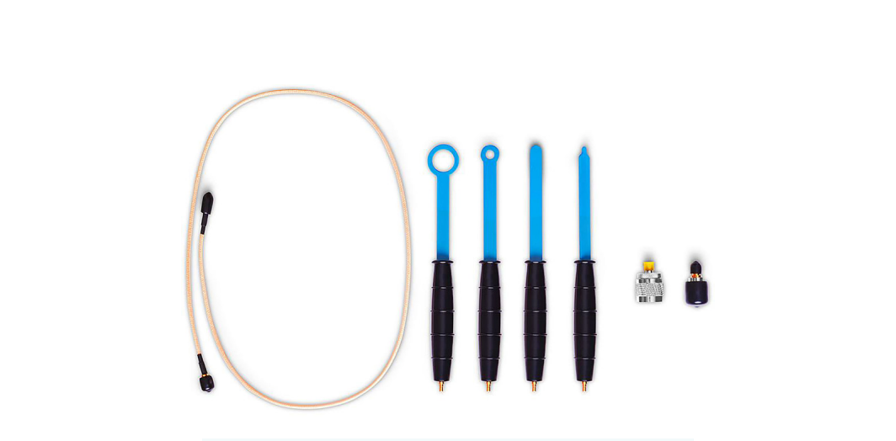
A simple near field test. The quickest first pass is to set the spectrum analyzer to the peak detector, set the resolution bandwidth (RBW) and span to match the regulatory requirement for your device, choose the appropriate E or H probe, and scan slowly over the surface of the design. The probe behaves like a tiny antenna, picking up emissions from seams, openings, traces, connectors, and anything else that leaks. A thorough scan covers all of it: circuit elements, connectors, knobs, case openings, and enclosure seams.
The peak detector gives a worst-case reading fast, which is exactly what you want for a first pass to find the hot spots. Larger probes scan faster but resolve location less finely; smaller probes resolve down to individual pins but cover ground slowly. Once you know where the trouble is, you can switch to the detector modes used in real compliance work: quasi-peak detection, the EMI filter, and the RBW settings called out in the standard for your product. Those settings take longer but show you the EMI profile the compliance lab will see. Many analyzers let you store cable and antenna correction factors so the displayed trace reflects the true signal rather than the losses of your setup.
The next step up in radiated testing replaces the near field probes with calibrated antennas, adds a turntable to rotate the device under test, and moves the whole setup into a semi-anechoic chamber. How far you take that depends on your product and your budget.
Board-level emission testing needs only three things: a spectrum analyzer, a set of near field E and H probes, and the right connecting cable. Figure 11.3 shows a benchtop spectrum analyzer of the type used for this work.
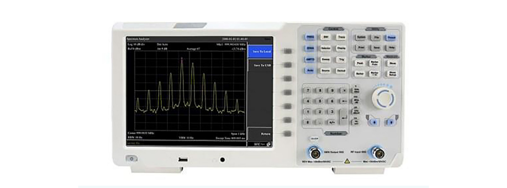
To use a typical loop probe set with a benchtop analyzer, you need a 50 ohm cable terminated in the analyzer's input connector (often N-type) at one end and the probe's connector (often SMB) at the other. You can also build serviceable probes yourself: strip a few centimeters of outer shield and insulator from a length of semi-rigid coax, bend the exposed center conductor into a loop and solder it back to the shield, then dip the loop in plastic tool dip or another insulator. Larger loops pick up weaker signals but resolve location less precisely; smaller loops trade sensitivity for finer spatial resolution.
Performing the test. Start with the peak detector. It captures the worst-case RF peak and scans fast, which keeps the time at each position short as you move across the device under test. Larger probes speed the scan further; smaller probes, especially E field tips, let you find RF on a single pin of a single part.
Orientation, rotation, and distance all matter. The probe is an antenna, and you maximize the coupled signal by presenting the loop to the largest perpendicular field. Rotating an H field probe at a suspect spot often makes a hidden source jump out, because the loop only couples strongly when the magnetic field threads through it. Figure 11.4 shows an H field probe in use over a board; note how it is held.
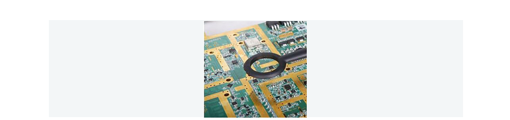
Cables deserve special attention, because they are efficient radiators. Figure 11.5 shows a display ribbon cable being checked with an H field probe; ribbon cables, and any cable with weak shielding or a poor ground, are among the most common sources of radiated emissions.
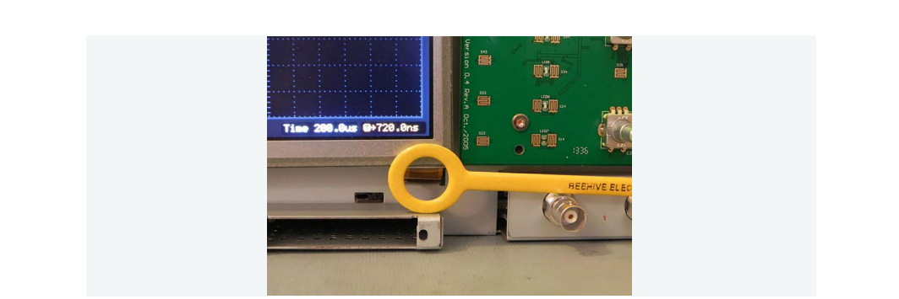
A quick confirmation trick: cover a suspected leak with aluminum foil or conductive tape and rescan. Test the area first without the foil, then with it, and compare. If the emission drops when the area is covered, you have found a leak path through a vent, cover, door, seam, or cable entry. Once you know the problem areas, you can characterize them in more detail using the full-compliance detector and RBW settings described earlier.
A few habits make near field troubleshooting more reliable:
Radiated EMI leaves through the air. Conducted EMI leaves through the wires, specifically the power cord. Conducted emissions testing measures the RF energy a product couples back onto the AC mains it is plugged into. That energy can travel along the power line and interfere with other equipment, classically showing up as noise in the AM broadcast band. Quantifying the power and frequencies a product injects into the grid is the goal.
Conducted EMI is measured with a spectrum analyzer, like radiated EMI, but the setup adds two parts: a line impedance stabilization network (LISN) and a transient limiter. The LISN does three jobs at once. It presents a known, standardized impedance to the device under test so results are repeatable, it isolates the mains from the device so utility noise does not pollute the measurement, and it couples the device's conducted noise out to the analyzer. The transient limiter protects the analyzer's sensitive front end from fast spikes the LISN passes through.
As with radiated work, start with a peak-detector sweep across the frequency range of interest, then follow up with a quasi-peak (QP) measurement on any frequency that looks marginal. That two-step approach gives you fast coverage first and a compliance-grade reading where it counts.
Conducted emission measurement setup. The closer your setup matches the full compliance geometry, the better your odds in the official test. Figures 11.6 and 11.7 show the standard electrical and physical arrangements for conducted emissions testing.
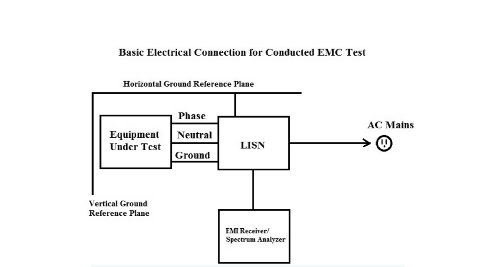
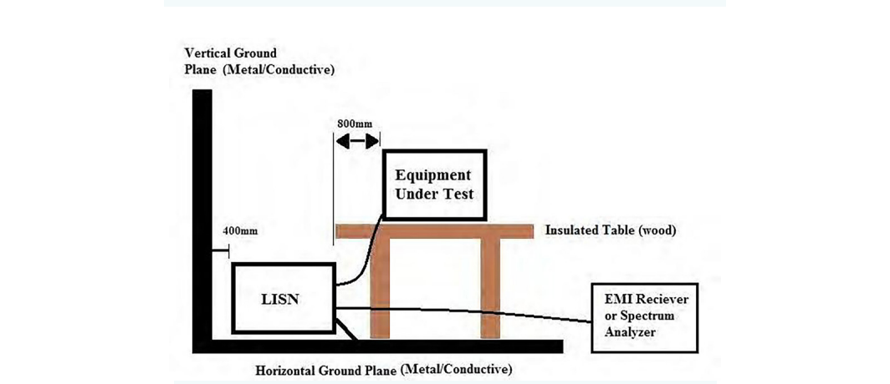
A handful of setup rules drive most of the repeatability:
Test steps. With the device set up and the LISN and ground planes bonded, power on the spectrum analyzer and let it warm up, commonly at least 30 minutes, for stable, accurate readings. Then configure the analyzer:
If it offers quasi-peak detection and the FCC resolution bandwidths of 200 Hz, 9 kHz, and 120 kHz, use them; they bring your data closer to what a compliance lab records. Be aware that quasi-peak detection makes scans much slower. Set the RBW to the value in the applicable EMC specification, and set the start and stop frequencies to that specification's range. The RBW depends on both the standard and the device type. As one example, FCC Part 15 specifies a 9 kHz RBW for measurements from 150 kHz to 30 MHz. Always consult the standard that actually applies to your product. Many specifications give limits in dBuV, so set the scale to volts (logarithmic) if your analyzer offers it. Set the detector to positive peak for the first pass; that shows the highest value and gives a worst-case reading.
If the analyzer has a pass/fail limit-line feature, configure an upper limit line from the standard. It makes evaluating a sweep against the legal limit immediate, and you can usually save limit lines to internal storage. Finally, add an external transient limiter and 10 to 20 dB of external attenuation. The attenuation protects the front end from unknown signals and gives you a quick way to check for input overload after you read the background. The analyzer has its own protection, but some transients are too fast for it to catch.
Check the background first. Power up the LISN, connect the analyzer to the LISN output, and sweep the band with the detector on peak and the attenuator at 10 dB. This tells you what you are measuring before the device is even connected.
Peak test. To bring the device in safely, disconnect the analyzer from the LISN, connect the device to the LISN, then reconnect the analyzer. Sequencing it this way reduces the chance that a connection transient reaches the analyzer. Watch the conducted emissions sweep and raise the attenuation to 20 dB. If the trace does not move when you change attenuation, the input is not overloaded and the measurement is trustworthy, so you can proceed. If the trace does change with attenuation, broadband power is overloading the input. Compare 20 dB against 30 dB, and higher if needed, until the trace stops changing. Choose the smallest attenuation that shows no overload error. In the worst case a device may not be testable on a spectrum analyzer at all, and you will need a true EMI receiver with preselection filtering. Then look for any frequency line above your limit line and note the failing frequencies.
Quasi-peak scans. For each failing frequency, recenter the analyzer on that peak. Note the peak-scan RBW and set the span to about twice that RBW. For example, an over-limit peak at 10 MHz measured with a 120 kHz RBW would be centered at 10 MHz and swept from 9.88 MHz to 10.12 MHz. Switch the detector to quasi-peak. The quasi-peak detector is built around a standardized resonant circuit with defined charge and discharge times, which weights brief, infrequent emissions less heavily than steady ones, the way a human ear weights interference. QP scans can take more than three times as long as a peak scan, so use QP only over short spans. Compare the quasi-peak result to the pass/fail limit for that frequency. Aim to keep conducted emissions at least 10 dB below the specified limit. That margin absorbs the differences between your bench and the compliance lab and raises your odds of passing the first time. It is also worth comparing your precompliance setup and data directly against the lab that will certify the product, so you can refine your error budget and trust your own numbers.
Emissions are only half of EMC. The other half is immunity: how a product behaves when energy comes at it from outside. A product that contains electronics can be upset by electromagnetic interference, operating incorrectly or not at all. A product that shrugs off interference is called immune; one that misbehaves is called susceptible. Common symptoms of susceptibility include:
A designer has several levers to reduce susceptibility, including part selection, shielding, grounding, filtering, and cable choice. Test for it early, under realistic conditions, so the fixes are cheap to make. The procedures below cover radiated susceptibility, where the interfering energy arrives as a field rather than through a wire.
Radiated susceptibility testing. A radiated susceptibility test observes the device under test while it is bathed in a known RF field. The field is delivered by an antenna for far field testing in a chamber, or by a near field probe for a board-level test. The drive signal is typically amplitude modulated by a 1 kHz sine wave at 80 percent modulation depth, because the modulation makes upsets easier to provoke and to recognize. Many regulations for this work are based on the international standard IEC 61000-4-3, which calls for coverage across roughly 80 MHz to 1000 MHz. [3] Verify before publication.
Far field test. Configure the device in its most common operating state, with all cabling connected: power, signal, and I/O. Cables act like antennas, and leaving them off can hide a real susceptibility. Drive the antenna at a starting frequency and watch the device for any functional change, such as a glitching or noisy display. Step the carrier frequency up, re-check, and keep stepping while noting which frequencies cause problems and what those problems are. After reaching the top of the range, you can rotate the device relative to the antenna and repeat for a more thorough test. A flexible RF source, like the signal generator shown in Figure 11.8, lets you adjust frequency, power, and modulation quickly to chase down problem areas.
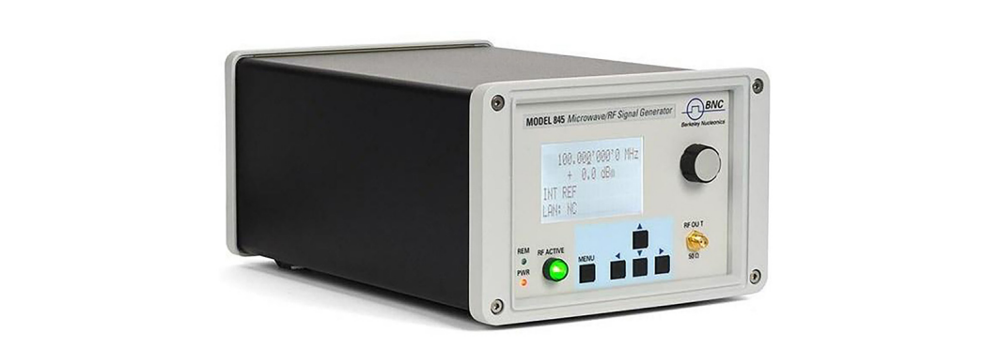
There is an important legal constraint. Antennas used for susceptibility testing should only be driven inside a shielded anechoic or semi-anechoic chamber. Radiating these signals in the open can violate laws that protect communications and emergency broadcast bands.
Near field test. Near field susceptibility testing is easier to run because it needs no chamber. E and H field probes produce strong fields only within about an inch of the tip and do not radiate efficiently enough to threaten broadcast or emergency systems. The probes shown in Figure 11.9 are a commercial example of the near field probes used for this work.
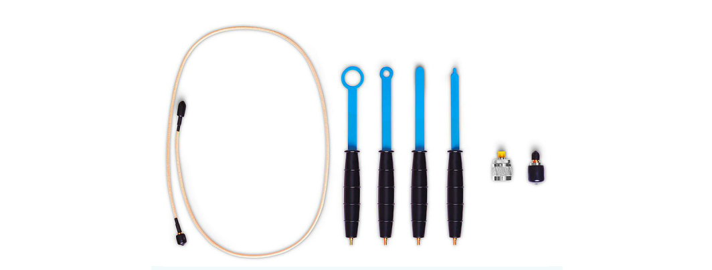
The probe's small size is also a feature: it lets you direct RF at one circuit element at a time, and E field probes with the smallest tips give the finest targeting. Configure the RF source exactly as in the far field test, then hold the probe tip very close to the circuit or element of interest. Scan across the board and watch the device, paying special attention to sensitive analog front ends. Figure 11.10 shows this on an oscilloscope: the shielding was removed from the board and an E field probe driven by a signal generator was used to inject RF into the analog input.
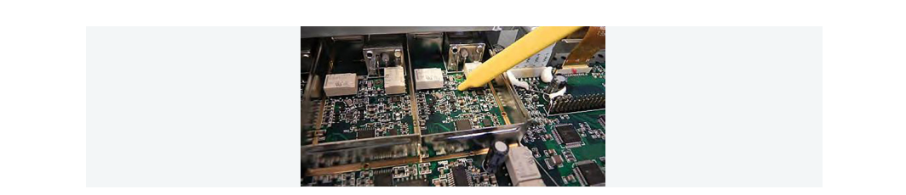
The effect is dramatic. Figure 11.11 shows the oscilloscope's captured waveform with shielding in place, clean and stable. Figure 11.12 shows the same measurement with the shielding removed: the injected RF corrupts the data and distorts the waveform badly. Side by side, the two captures make the value of shielding obvious and give you a direct, repeatable way to prove a fix works.
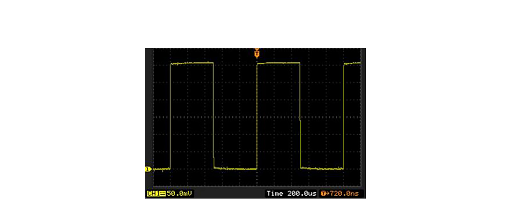
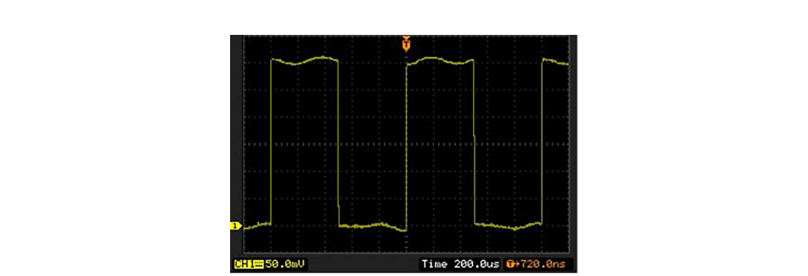
Precompliance tells you whether a design is heading in the right direction. Standards tell you what "compliant" actually means, and they differ by market and by application. The detail below is conceptual; the exact limits, frequency ranges, and methods change as standards are revised, so treat the specific numbers as orientation and confirm against the current published documents before relying on them. The three families below cover most of the work an RF or electronics engineer will encounter. [4] Verify before publication.
CISPR (international commercial). CISPR, the International Special Committee on Radio Interference, is a committee of the IEC that publishes the test methods and limits most of the world uses for commercial product EMC. Two of its current product standards matter most for general electronics. CISPR 32 covers electromagnetic emissions from multimedia equipment, the broad category that includes computers, networking gear, and audio and video devices, and it defines limits for both radiated and conducted emissions across Class A (commercial and industrial environments) and Class B (residential, where limits are tighter). CISPR 35 is its companion immunity standard for the same multimedia equipment category, defining how much interference such products must tolerate. Together CISPR 32 and CISPR 35 replaced the older CISPR 22 and CISPR 24 pair. National and regional bodies adopt these as their own: the European Union references harmonized versions under the EMC Directive for CE marking, and many other countries adopt them with minor national deviations. [5] Verify before publication.
FCC Part 15 (United States). In the United States, Title 47 of the Code of Federal Regulations, Part 15, governs radio-frequency devices, including the unintentional radiators this chapter is mostly about. Part 15 sorts equipment by class in much the same spirit as CISPR. Class A covers devices marketed for commercial, industrial, or business use, and Class B covers devices that may be used in a residential setting, which carries tighter limits because the device is more likely to sit near a consumer's radio or television. Part 15 also distinguishes unintentional radiators (digital devices that emit RF only as a side effect) from intentional radiators (transmitters), which face additional requirements. For many digital devices the path to market is a supplier's declaration of conformity backed by testing and documentation, while intentional radiators generally require formal certification. The FCC's test procedures lean on CISPR methods, which is why precompliance work done to CISPR settings translates well to a US submission. [6] Verify before publication.
MIL-STD-461 (US defense and aerospace). MIL-STD-461 is the US Department of Defense standard for the EMI characteristics of electronic equipment used in military and aerospace systems. It is both broader and stricter than the commercial standards, because a fault in a military system can be a safety or mission failure. The standard is organized around a set of named requirement tests, each identified by a two-letter prefix and a function: CE for conducted emissions, CS for conducted susceptibility, RE for radiated emissions, and RS for radiated susceptibility. Familiar examples include CE102 (conducted emissions on power leads), RE102 (radiated emissions, electric field), CS114 (conducted susceptibility from bulk cable injection), and RS103 (radiated susceptibility, electric field), the last of which can require very high field strengths to simulate exposure near powerful transmitters. Limits and applicability depend on the platform, since an aircraft, a ship, and a ground vehicle present different electromagnetic environments. Related standards such as MIL-STD-464 address EMC at the level of the whole platform rather than a single box. The conceptual skills from this chapter, separating emissions from susceptibility and conducted from radiated, map directly onto the structure of MIL-STD-461. [7] Verify before publication.
Across all three families, the precompliance approach is the same. Find the standard that applies to your product and market, learn its limits and detector and bandwidth settings, then build a bench setup that mirrors the compliance test as closely as you can afford. Every problem you find and fix on your own bench is one you do not pay an accredited lab to find for you.
Going Deeper - Peak, quasi-peak, and average detectors
EMC limits are often written for more than one detector, and the detector changes the number. A peak detector reports the highest instantaneous value and gives the fastest, most conservative reading. A quasi-peak detector weights emissions by how often they occur, so a brief, infrequent spike reads lower than a continuous tone of the same amplitude, which models how interference actually annoys a listener. An average detector reports the mean and reads lowest of the three. Standards may apply a quasi-peak limit and a separate, lower average limit to the same band. Knowing which detector a limit refers to is as important as knowing the number itself.
BNC in Practice - Building a precompliance bench
The instruments in this chapter, a spectrum analyzer for emissions, a signal generator for susceptibility, near field probes, a LISN, and a transient limiter, are the core of a precompliance bench you can assemble in house. Berkeley Nucleonics builds RF and microwave test instruments in these categories. Match instrument frequency range, resolution bandwidth options, and detector modes to the standard you test against, and verify the specifics against the current datasheet before you commit.
Take it interactively. The quiz lives on its own page with hidden answers - write your attempt first (even four characters works), then reveal. Self-graded. About 10 minutes.
Or read the questions and answers inline below (preserved for print and offline use).
[1] FCC EMC rules and the EU EMC Directive framework reference CISPR and IEC test methods. Verify before publication.
[2] Representative cost of a small semi-anechoic chamber. Verify before publication.
[3] IEC 61000-4-3, radiated radio-frequency electromagnetic field immunity test, 80 MHz to 1000 MHz range and 1 kHz / 80 percent AM modulation. Verify before publication.
[4] Standards limits, frequency ranges, and methods are revised periodically; confirm against current published documents. Verify before publication.
[5] CISPR 32 (multimedia emissions) and CISPR 35 (multimedia immunity), Class A and Class B; relationship to former CISPR 22 / CISPR 24. Verify before publication.
[6] 47 CFR Part 15, unintentional and intentional radiators, Class A and Class B, declaration of conformity versus certification. Verify before publication.
[7] MIL-STD-461 requirement tests (CE102, RE102, CS114, RS103) and platform-level MIL-STD-464. Verify before publication.